0. 문제 설명
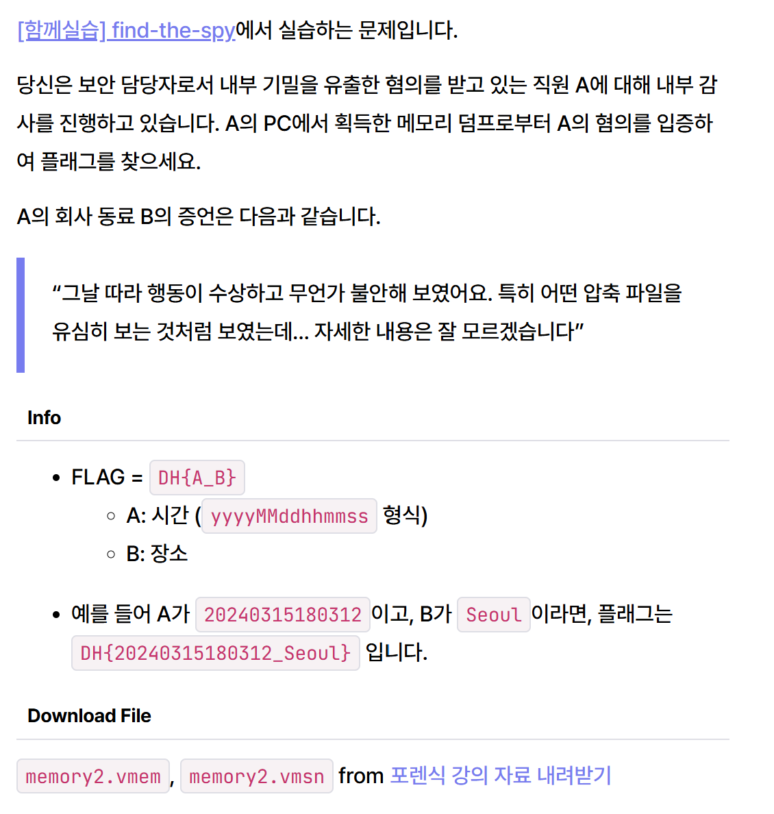
1. 문제 분석
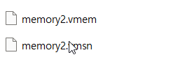
문제에서 제공한 두 개의 파일이다.
1-1. 파일 종류
| .vmem | .vmsn | |
| 저장 내용 | 메인 메모리(RAM) 내용 저장 | 스냅샷 상태 저장 |
| 역할 | 주요 분석 대상 | 메타데이터 |
.vmem과 .vmsn을 같은 폴더에 두고, .vmem 속에서 필요한 정보들을 찾기로 하자.
2. 압축 파일 찾기
2-1. OS 프로파일
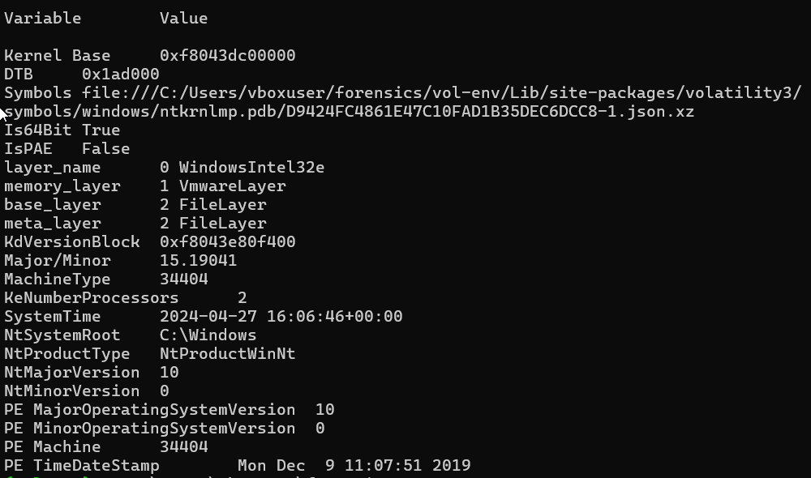
2-2. 프로세스 관련 정보
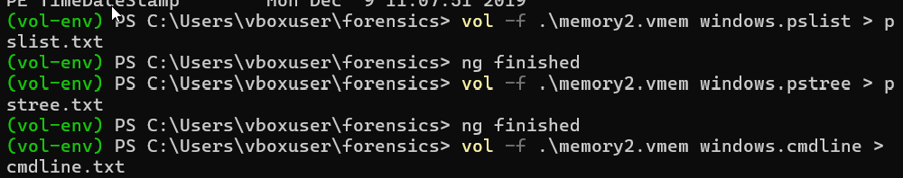
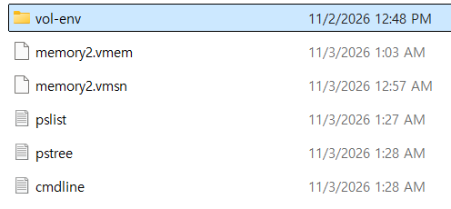
2-3. pslist
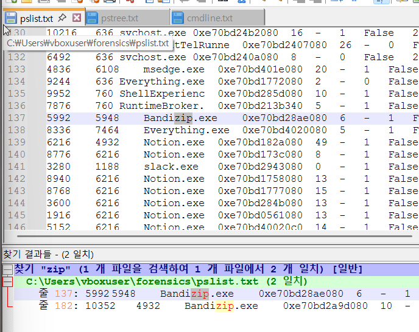
발견
Bandizip.exe (압축 프로그램)
2-4. pstree
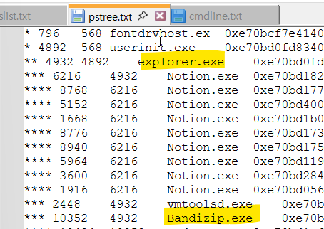
- 압축 프로그램을 실행시킨 부모 프로그램이
explorer.exe임을 확인 - ‘사용자가 탐색기에서 직접 실행했다’는 의미
2-5. cmdline
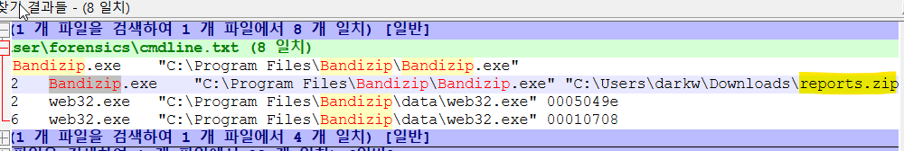
- 압축 프로그램이
reports.zip을 실행
다음 단계
reports.zip 내용을 추출해 보자!
3. 파일 추출 및 확인
3-1. reports.zip 추출
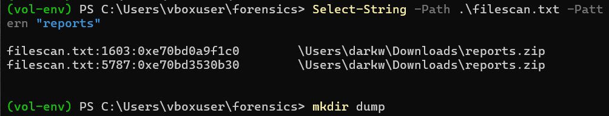
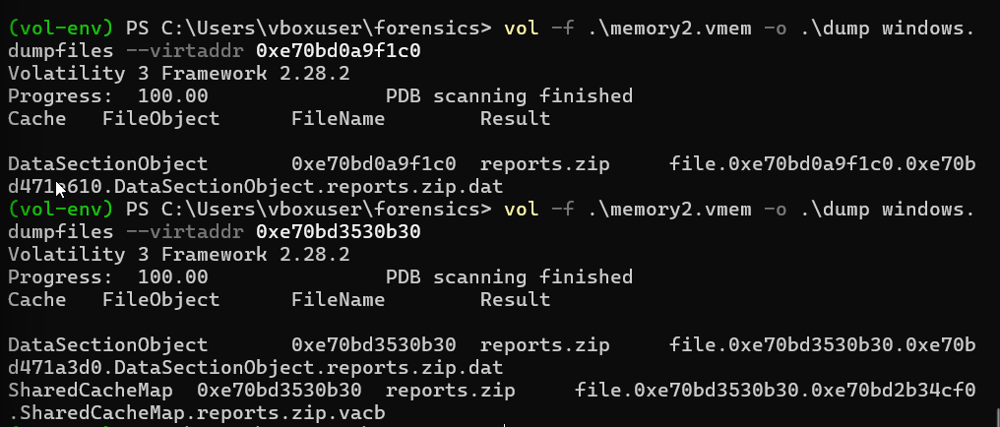
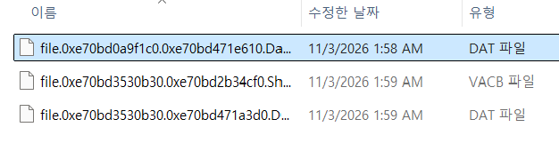
세 개의 파일이 나왔다.
3-2. 반디집 프로그램
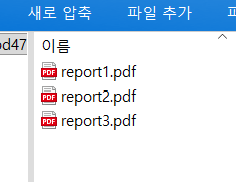
반디집으로 이전에 추출한 세 개의 파일 중 읽을 수 있는 파일을 열어 확인한 내용이다.
- 모든 PDF 본문 내용은 확인했을 때 문제가 없었다.
- 파일 구조 자체를 봐 보자!
3-3. HxD
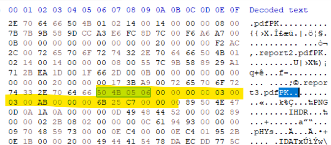
EOCD
ZIP 파일의 맨 끝에 있는 22바이트짜리 요약 정보
| 시그니처 | 50 4B 05 06 |
|---|---|
| 특징 | zip 프로그램은 EOCD까지 읽는다. 그 뒤의 코드는 읽지 않는다. |
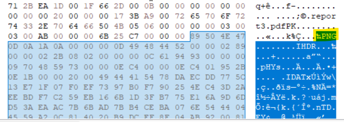
남는 구조에서 PNG 시그니처를 발견했다. 해당 코드를 복사하여 PNG를 만든다.
3-4. png
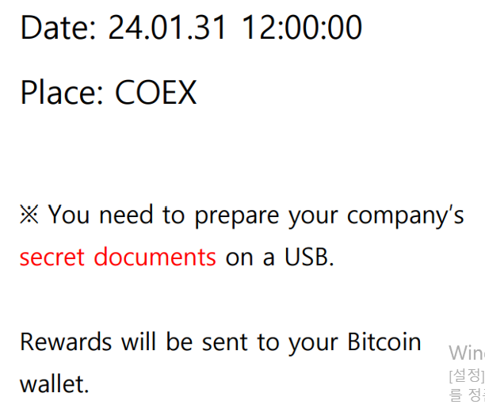
결과
확인 결과, 답에 해당하는 시간과 장소를 발견했다!
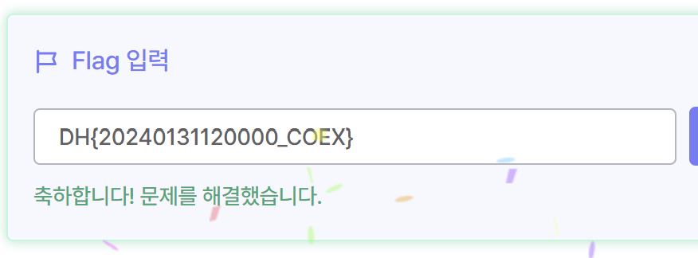